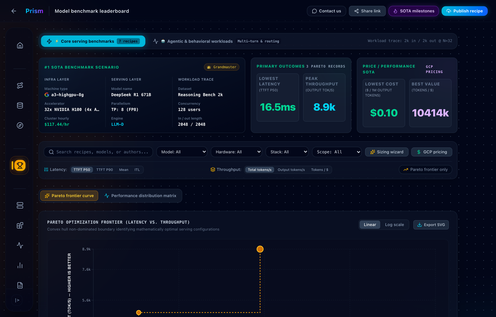

Scene 1: Discovery & Pareto Frontier
0:00 – 0:25 (25s)

🔍 Open full image
📍 Visual cue:
Point to top SOTA cards, hover over the stepped gold Pareto frontier line, and toggle linear vs log scale.
🎙️ UX Lead Voice-Over Script
"Hi team! Today I'm walking you through our new Prism Leaderboard. Right now, engineers have to guess which serving configuration works best under latency pressure. We solved this with an interactive Pareto optimization curve that plots the mathematical best trade-off between Time to First Token and throughput across NVIDIA H100s, L4s, and Google Cloud TPU v6e clusters."
Pacing: Conversational & Clear
Target length: 25 seconds
🎯
CUJ 1: Discovering SOTA Performance & Pareto Frontiers
Target Persona:
ML Performance Engineer & Researcher
User Problem:
Evaluating throughput numbers in isolation without knowing if they meet latency SLAs.
How the UI Solves It:
Renders a non-dominated Pareto frontier curve with live tooltips, axis switchers, and zero-horizontal-scroll table rankings.